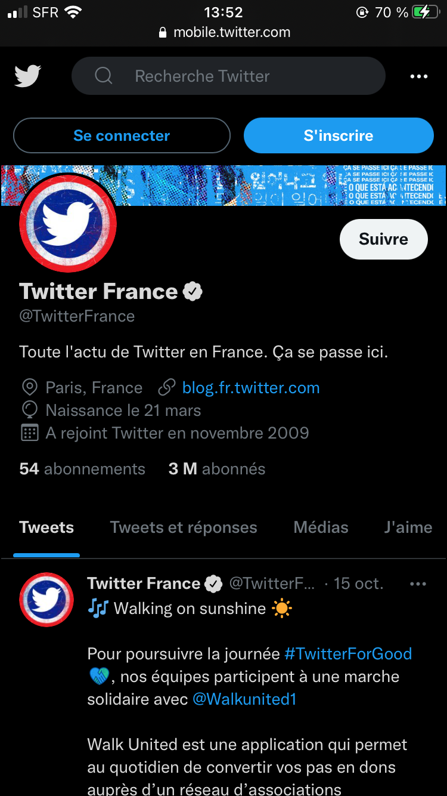
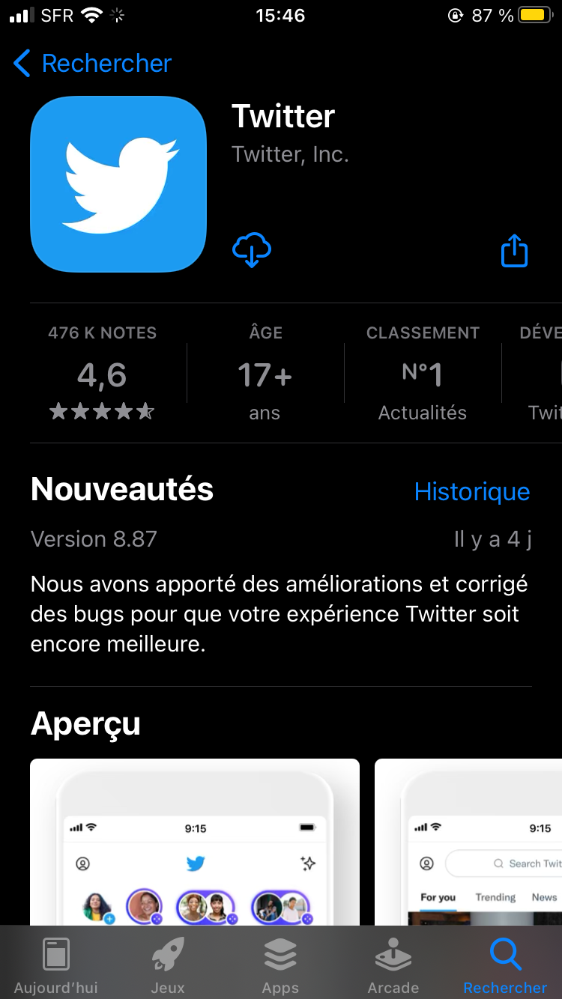

Twitter est un service de microbloggage ou microblogging, qui permet à ses utilisateurs de bloguer
grâce à de courts messages.
POURQUOI TWITTER ?
Twitter est un bon outil de veille informationnelle. Le flux d'info est tellement dense que l'on peut trouver
de l'information sur tous les sujets. Il vous suffit de s'abonner aux comptes qui nous intéresse et de
faire les recherches par mots-clés !
Twitter n'est pas seulement un média social majeur, il est aussi un phénomène de société. Plus que
jamais. Il permet aux marques, aux médias, aux influenceurs et aux consommateurs de se rencontrer
et d'échanger.


COMMENT ET OU TELECHARGER TWITTER ?
Vous pouvez télécharger Twitter sur ios et android voici deux liens : Twitter ios Twitter Android et vous pouvez y accéder directement en cliquant ici